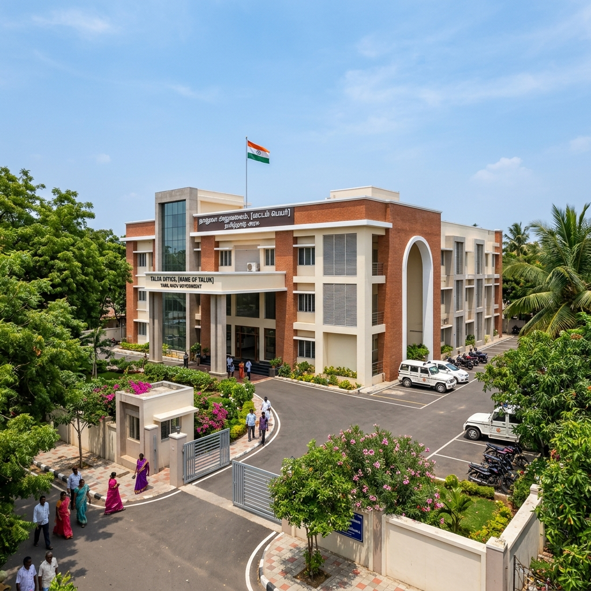

Taluk Office – Kurinjipadi Taluk

The Taluk Office at Kurinjipadi is the primary revenue administrative office for the Kurinjipadi Taluk, under which the Neyveli township and surrounding villages fall within the Cuddalore District of Tamil Nadu. This office is managed by the Tamil Nadu Revenue Department and is headed by the Tahsildar.
The Taluk Office is the key government body for obtaining official revenue documents such as nativity certificates, income certificates, community certificates (OBC, SC/ST), land ownership documents (patta), encumbrance certificates, and title deeds. Residents of Neyveli seeking government-certified documents for educational admissions, jobs, pension applications, and loan processing will need to visit this office.
Nearby Places to Explore
Kurinjipadi Bus Stand
Distance: 0.3 km
Distance: 0.3 km
Kurinjipadi Railway Station
Distance: 0.5 km
Distance: 0.5 km
Neyveli Township
Distance: 8 km
Distance: 8 km